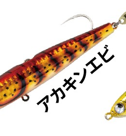
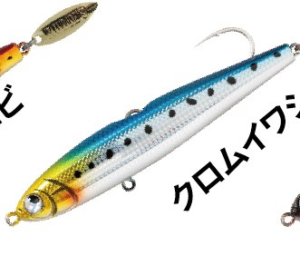
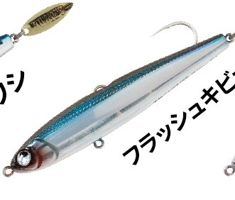
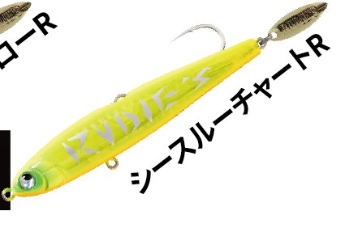

魚極ペン100
魚極ペン100はRUDIE'S（ルーディーズ）のシンキングペンシルです。
根掛かり回避に特化したシンキングペンシルです。本体上部に背負わせたストレートフックが、魚のバイトで可動する「Lock or Alive（ロックオアアライブ）」システムを初搭載。通常時はスリットにフックが収納されていて根掛かりしにくく、ヒット後はフックが自動的に外れてバラシを大幅に減らします。

画像出典:RUDIE'S公式HP
スペック
- メーカー
- RUDIE'S（ルーディーズ）
- タイプ
- シンキングペンシル（Lock or Alive搭載）
- 全長
- 100mm
- ラインナップ
- 25g（Shallow Type）／35g（Normal Type）
- 付属品
- #3/0シングルフック＆オリジナルブレード
- カラー
- 全6色
- ターゲット
- 根魚全般・中型青物・フラットフィッシュ・シーバスなど
- 価格
- 1,300円（税別）
▼今すぐチェック

魚極ペン100の特徴
根掛かりを避けながら、ボトムの根魚を攻められるシンペン
-
フックが動くLock or Alive
通常時はスリットにフックが収納されていて、ボトムに着いても根掛かりしにくい。ヒット後はフックが自動的に外れ、プラグ本体の抵抗がフックポイントにかからないので、バラシを大幅に減らせる。
-
ブレードとラトルでアピール
テール部のオリジナルブレードがチカチカとフラッシングして誘い、バイトポイントにもなってフッキング率アップ。広範囲の魚に届くラトルも標準搭載している。
-
トレブルフックでも使える
エイトカンに別売のトレブルフックを付ければ、通常のシンキングペンシルとしても使える。青物やシーバス、フラットフィッシュなどあらゆるフィッシュイーターに対応する。
魚極ペン100の使い方
キャストしてボトムまで沈め、リフト＆フォールやただ巻きで底付近を探るのが基本です。フックが背中側に収納されているので、根の荒い場所でもボトムを感じながら引いてこられます。
中層を引いて青物やシーバスを狙う時は、エイトカンに別売のトレブルフックを付けて、通常のシンキングペンシルとして使いましょう（その場合は背中のシングルフックを必ず外します）。
魚極ペン100の得意な状況
根の荒い堤防や磯で、キジハタ・アカハタ・オオモンハタなどのハタ類をプラグで狙いたい時が得意です。
ワームでは根掛かりが多い場所や、ボトム付近を速いテンポで探りたい時に出番があります。
ワンポイント
トレブルフックを付ける時、内蔵の磁石でフックがボディに張り付くことがありますが、着水後は離れるので安心して使えます（公式の注意事項より）。より喰わせやすいダウンサイジングモデルの魚極ペン85（18g・25g、1,200円）もあります。
サイズ・タイプの使い分け
| モデル | 重さ・タイプ | 付属品・価格（税別） |
|---|---|---|
| 魚極ペン85 | 18g（Shallow）／25g（Normal） | #1/0シングルフック＆ブレード・1,200円 |
| 魚極ペン100 | 25g（Shallow）／35g（Normal） | #3/0シングルフック＆ブレード・1,300円 |
※内容は公式ページより。全モデル共通で6色展開です。
カラーラインナップ
魚極ペンは根魚に効く厳選6色。そのうち4色を紹介します。

アカキンエビ赤金にエビ柄。甲殻類を食べている根魚に。

クロムイワシイワシを思わせるナチュラル系。青物やシーバスにも。

フラッシュキビナゴキビナゴを思わせるフラッシング系。

シースルーチャートRチャートのアピール系。濁りの時に。
画像出典:RUDIE'S公式HP
魚極ペン100に似ているルアー
-
 ハタ喰い・鵺
RUDIE'S
詳細はこちら＞
ハタ喰い・鵺
RUDIE'S
詳細はこちら＞
同じRUDIE'Sの根魚用ワーム。ボトムでじっくり食わせたい時に。
-
 ハタ喰い・蟲
RUDIE'S
詳細はこちら＞
ハタ喰い・蟲
RUDIE'S
詳細はこちら＞
ブレード付きの根魚ワーム。ワームでアピールしたい時に。
-
 超越
BREADEN
詳細はこちら＞
超越
BREADEN
詳細はこちら＞
BREADENの「魚種限定解除」プラグ。表層から底まで探りたい時に。